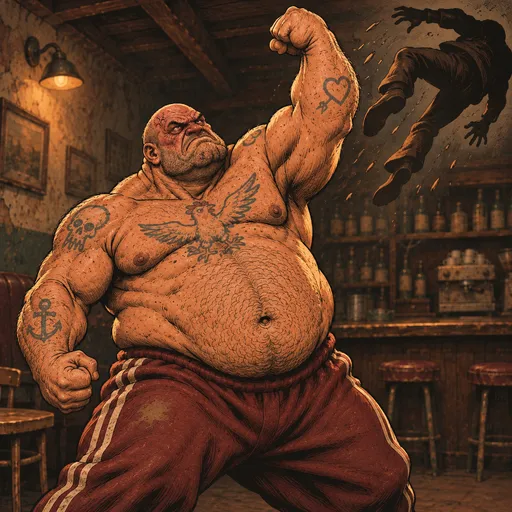
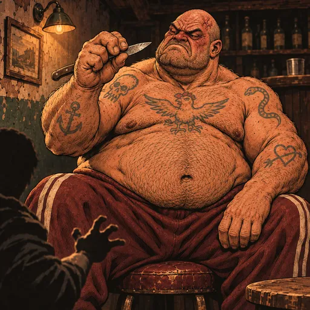
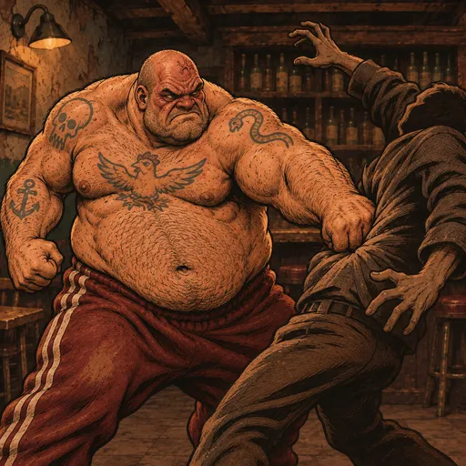
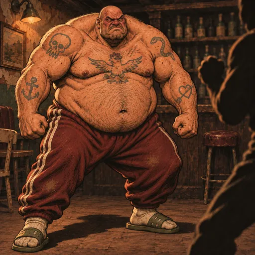
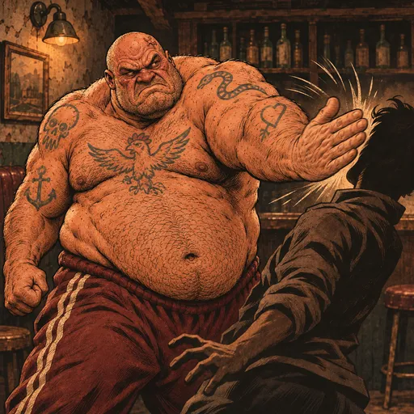
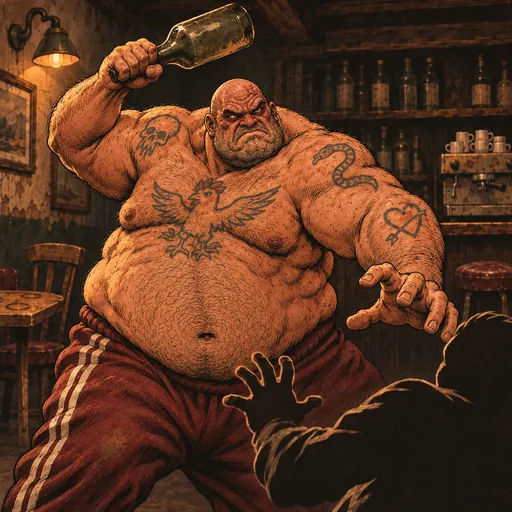

SGOMBERIAMOVI
base.bruiser.TiFaccioSpaziocerta

A circa 60 px:
Soggetto grande e contrastato; sgabello riconoscibile, gesto leggibile.
Giudizio del proprietario. Le sette attribuzioni indicate come inferite si basano sul soggetto e sull’ordine temporale, non su una mappatura tecnica restituita dallo strumento. Provenienza e limiti · Prompt.
base.bruiser.TiFaccioSpaziocerta
A circa 60 px:
Soggetto grande e contrastato; sgabello riconoscibile, gesto leggibile.
base.spazienzio.bound.TestaAlMurorifiuto
Rifiutata dallo strumento; nessuna anteprima.
bruiser.ExtremelyViolentBlowinferita: exec-1a9977ef

A circa 60 px:
Figura grande; avversario piccolo e vicino al bordo, il lancio è meno evidente a 60 px. Da giudicare.
bruiser.Glareinferita: exec-144f8b68

A circa 60 px:
Figura grande e distinta; pugni visibili, espressione meno leggibile in piccolo.
bruiser.MadeOfStoneinferita: exec-0bbc7dc8

A circa 60 px:
Il coltello è molto piccolo a 60 px; il personaggio sembra seduto e non afferra la lama come richiesto. Dubbia.
bruiser.SuperImpactinferita: exec-9876cd8c

A circa 60 px:
Soggetto grande; il pugno e la figura scura sono vicini e il contatto si perde un poco a 60 px. Da giudicare.
bruiser.YouStopinferita: exec-8664917b

A circa 60 px:
Figura grande e contrastata; la presa sul polso è minuta a 60 px. Da giudicare.
bruiser.character.LittleRageinferita: exec-95b9c6ab

A circa 60 px:
Figura grande con pugni chiusi; somiglia molto a PAZIENZA: FINITA e la sfumatura di irritazione si perde. Dubbia.
bruiser.character.LittleSmackcerta; ripetizione dopo chiamata interrotta senza esito

A circa 60 px:
Figura grande; schiaffo leggibile, ma avversario e mano sono vicini al bordo. Da giudicare.
com.basic.BruiserGrabinferita: exec-932921fa

A circa 60 px:
Figura grande; bottiglia alzata visibile, ma non appare presa dal bancone. Da giudicare.